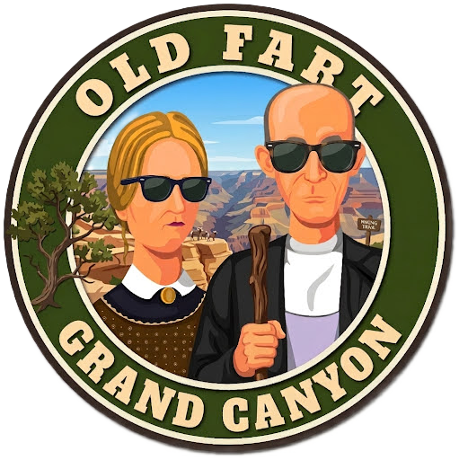
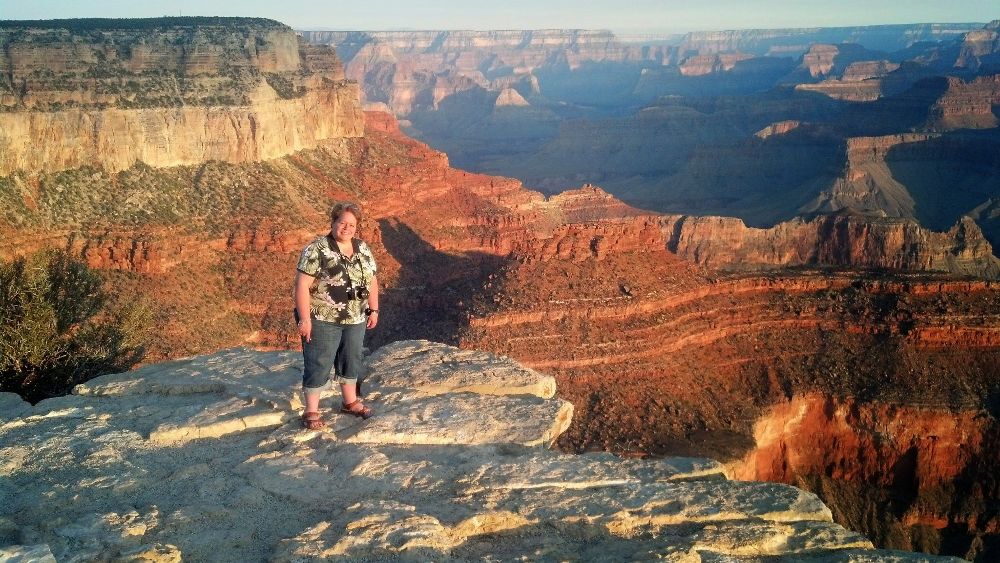
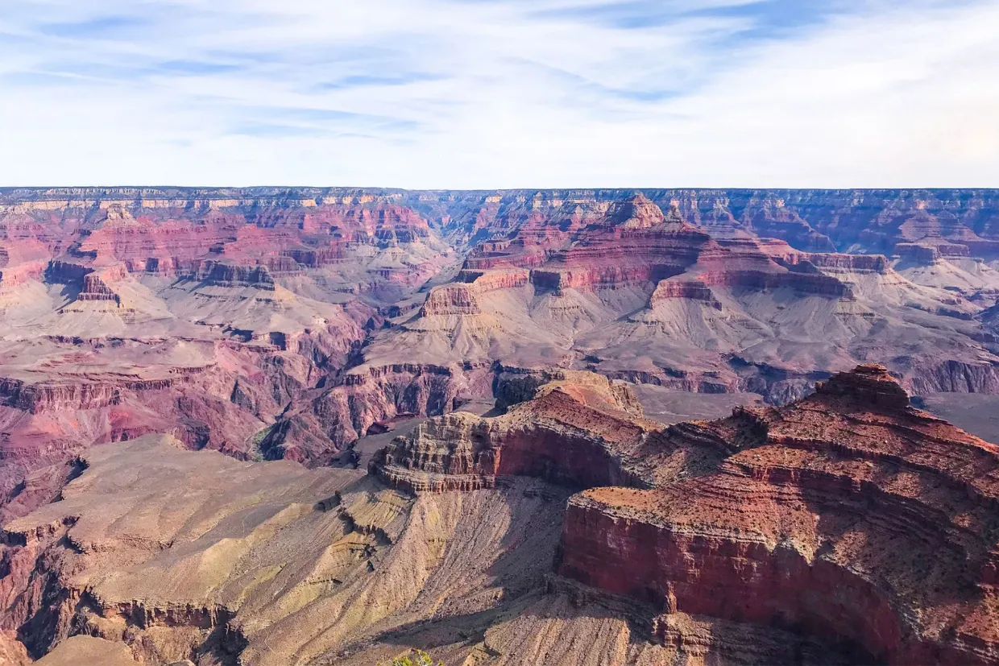
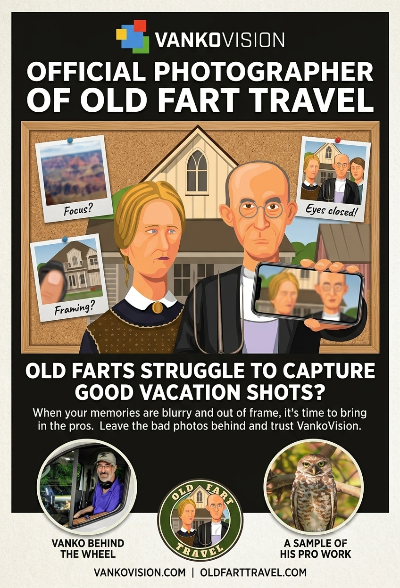

🍳 Breakfast
On Your Own
Coffee. Something easy. Then head for the rim.
You'll remember the sunrise long after you've forgotten breakfast.

Grand Canyon • Thursday, August 6, 2026

Yesterday, the Grand Canyon introduced itself.
Today... you get to know each other a little better.
There's no rush. No long drive. No race to the next destination.
Today belongs to the Canyon.
Grab a cup of coffee and whatever breakfast you've picked up. Walk the short distance from Kachina Lodge to the rim. Find a quiet place to sit. Then simply watch the Canyon wake up.
Sometimes silence is part of the attraction.

Robin greeting the sunrise during our first Old Fart visit in 2013.
Ride all the way to Hermit's Rest... or hop on and off throughout the day. Either way, you can't lose.
Hopi Point — One of the South Rim's signature viewpoints.
Mohave Point — A wonderful place to catch a glimpse of the Colorado River. Usually a little quieter than Hopi Point.
The Abyss — Its name says it all. One of the sheerest drops anywhere along the South Rim.
Hermit's Rest — Designed by Mary Colter. Browse the gift shop. Grab a snack. Imagine making this trip before there were shuttle buses.
Explore El Tovar Hotel, Hopi House, Kolb Studio, Bright Angel Lodge, gift shops, ice cream, coffee, or another walk along the Rim Trail.
Or... simply find a bench. The Canyon has a remarkable way of rewarding people who aren't in a hurry.
Walk a few minutes beyond the village lights. Then look up.
The Grand Canyon isn't the only thing that's immense around here.

On Your Own
Coffee. Something easy. Then head for the rim.
You'll remember the sunrise long after you've forgotten breakfast.
Hermit's Rest Snack Bar
Sometimes a simple snack is all you need. The scenery is doing most of the heavy lifting today.
🍔 View MenuChoose whichever sounds better tonight.
Harvey House Café
or
Maswik Food Court
Vacation Rule #14: Nobody gets judged for choosing comfort food after walking all day.
🍽️ Harvey House🍽️ Maswik Food CourtOne more night on the South Rim.
No packing. No driving. No schedule.
Just enjoy having one of the world's greatest landscapes sitting in your backyard.
🏨 Kachina LodgeA gentle reminder... you're here for the scenery, not the cuisine.
Nobody has ever returned home saying, “You should've seen the onion rings.”
Grand Canyon National Park covers nearly 2,000 square miles.
You are under absolutely no obligation to see all of them today.
Take your time.
The Canyon has been practicing patience for about six million years.
Nature's Playlist.
Leave one earbud out today.
The wind... the ravens... the Canyon... and even the silence...
have been performing here a lot longer than Spotify.
Tomorrow we leave the Grand Canyon...
stop for lunch and shopping at Cameron Trading Post...
then continue toward Page, where another remarkable view—and another adventure—awaits.

We are halfway through our journey.
So much has already been seen... and so much more still waits.
Never take for granted how fortunate we are...
to be where we are...
or who we're fortunate enough to be sharing it with.